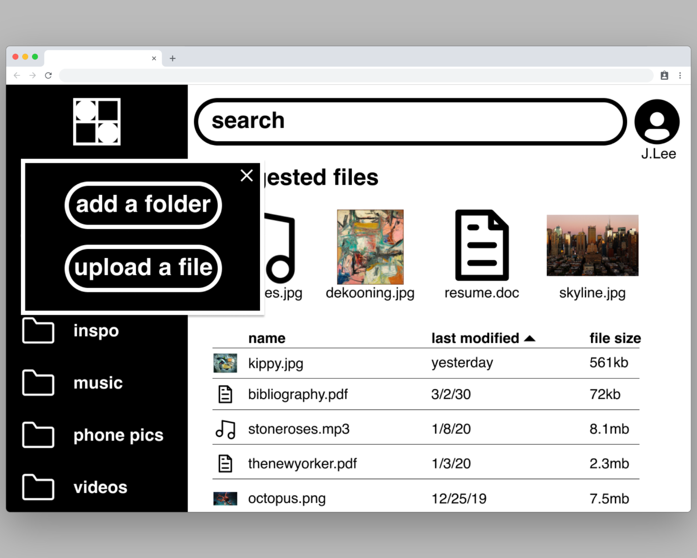
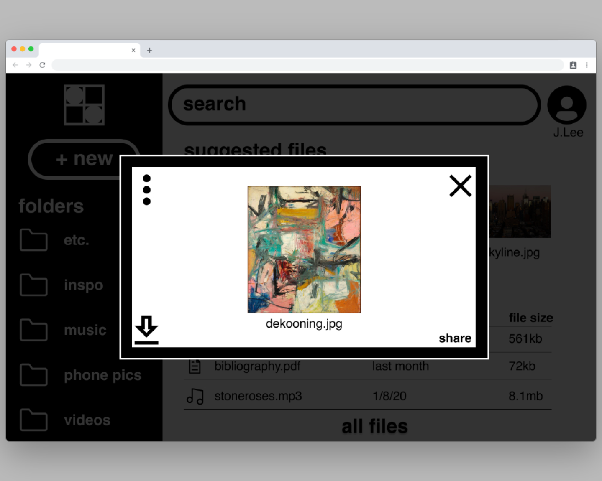
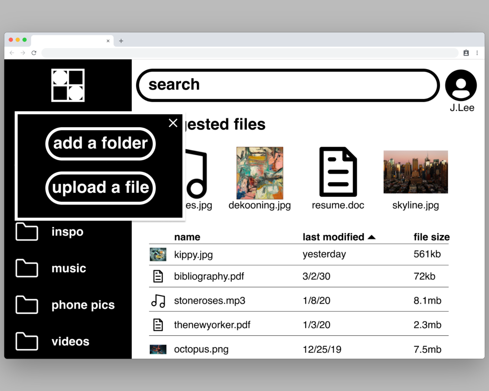
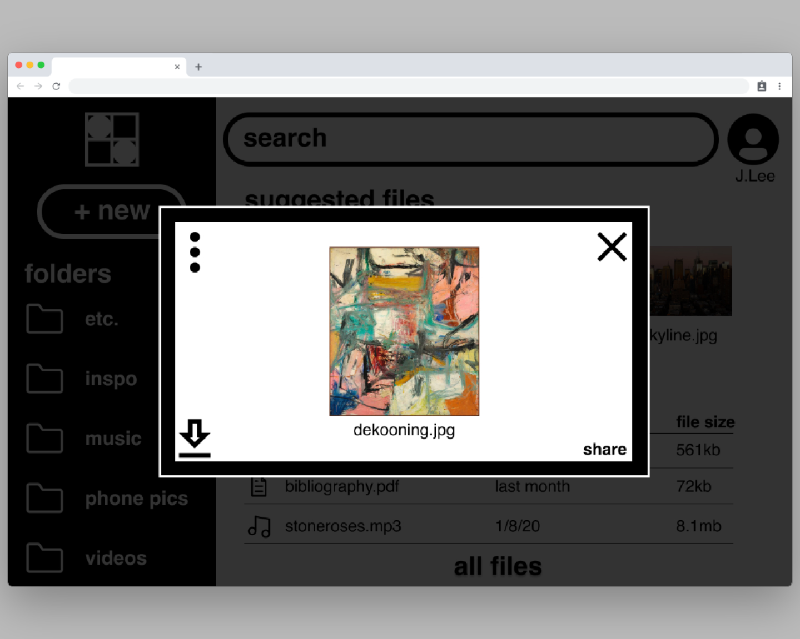

blackbox:
a new kind of cloud storage

Role: ux/ui designer, digital product designer
Deliverables: Surveys, userflows, Wireframes, Prototype
Overview
Somehow most cloud storage applications manage to be both bland, and overly complex. Blackbox wants to fix that. At blackbox, we wanted to create a bold and visually striking platform that could appeal to cool creative people, but we wanted to make it simple enough for any grandma to use. We also needed that platform to be super secure. We don’t want any hackers stealing grandma’s secret apple pie recipe, or leaking her new mixtape. Blackbox is cloud storage for cool people, and their cool grandmas.
Problem
We were asked to create a cloud storage platform, and not much more than that as far as direction. It became our job to create a platform that could compete in this crowded marketplace, and maybe disrupt a little bit. We needed to create a unique and strong identity if we wanted to compete with the market leaders: google, dropbox, etc..
Solution
The simplest solutions are said to be “black and white”, so we decided to make that our color scheme and our inspiration. Bold fonts, large buttons, and a complete black and white color scheme creates a platform that’s unique and bold while being accessible to all users. Needless to say, accessibility is incredibly important to everyone at blackbox. We studied existing cloud storage options, and surveyed cloud storage users to see which features they used most, and built the app around those basic features to keep things simple, but left the option to expand the list of features in the future.Check out the prototype
{research}
Discovery
Our first step was to study the market which we were attempting to enter. We started by doing a competitive analysis of established cloud storage applications. I analyzed Evernote, Plex, and Pinterest.
-
Strengths
- great for moodboards
- social networking Weaknesses
- only for images
- must be < 10mb
-
Strengths
- great for notes
- very simple Weaknesses
- mostly for text
- no ink to text
-
Strengths
- great for media
- stream media across devices Weaknesses
- bad UX
- slow streams
Next we went to the consumer, to ask what they like about cloud storage apps, what they hate about them, and everything in between. To do this I created a survey.
The survey results showed that the number one thing that respondents use cloud storage for, is to backup data from their phone, followed by storing photos, and sharing files. Respondents also said that the ability to search, organize, and share files were the features they found most essential in a cloud storage app. We found that the biggest frustrations/issues users had with cloud storage were security concerns, followed by price. This data gave us a good starting point and let us know what to focus on as we began to build our application.
- 78% of cloud storage users use more than one cloud storage platform
- 76% of cloud storage users use a mobile cloud storage application
- 72% of cloud storage users use a desktop application
- 82% of cloud storage users use their cloud to store photos
Using the data collected from the survey, I created user stories to help set priorities and determine our MVP.
The data was also used to create two potential user personas:
1. A creative person who uses cloud storage to backup photos, projects, and mobile data.
-
Goals
- store and organize photos
- easily search files Frustrations
- files on multiple hard drives
- difficulty staying organized
- not having files on the go
2.A person who uses cloud storage for documents, and spreadsheets as part of their job.
-
Goals
- file security
- share files with employees
- organize files Frustrations
- no offline acces
- slow downloads
User Flows
Next I started to think about how the app would actually work. I created user flows for MVP functions including onboarding users, uploading a file, sharing a file, and sorting files into groups. With each function I aimed to keep things as simple as possible.
Lo-fi Prototype
With the basic architecture off the userflows, I started to think about how the site would actually look and feel. I wanted this application to be very simple, yet bold. It was incredibly important for the site to feel organized and friendly. Big fonts, simple (nontechnical) language, and intiutitive design was at the heart of this. I created some simple wireframes and turned them into a really low fidelity prototype, that I used to do some preliminary user testing.

User Testing
Using this prototype, I performed three user tests. I wrote a script and asked each user carry out four simple tasks:
1.Sign up for an account
2.Upload a file
3.Organize files
My testees had ample experience with cloud storage and were able to performan all three tasks with relative ease. The one area was there was slight hiccup was organizing files. This was partly due to the limits of my prototype, but I knew that I had room to improve, and make things simpler.
{branding & identity}
Brainstorming
For this product I wanted to convey ideas of simplicity, organization and security. To come up with a name for this platform I brainstormed using some mind mapping techniques. I came up with the name blackbox. Black and white is truth, and simplicity, a box of course is storage, and together blackbox is an indestructible highly secure form of storage. For me it was the perfect name for my application, and an inspiration for the whole identity.

Logo
For the platform I wanted to create a simple, almost minimal logo that felt unique, yet familiar, and could work at any scale, using only black and/or white. I did a number of sketches and settled on a segment box with two circles. The logo conveys simplicity and organization.
Styleguide
I want blackbox to have a unique design that would standout from the competition. I decided to take this idea of “black and white” to the extreme and build the whole platform using only black and white. Not only would this create a visually striking and unique platform, but it would be incredibly simple and also highly accessible. To drive home the simplicity and accessibility, I would build the site using a lot of large text and simple icons, using only one iconic, and highly legible font, Helvetica. With this direction I created a style guide.
Hi-fi Mockups
Using the lo-fidelity wireframes and the style guide, I created high fidelity wireframes. I changed things a bit to really streamline the design and make things as simple as possible. I got rid of the “files” page, and added an “add new” button that allows users to upload a file or create a new folder. When writing the copy, it was important for me to set a kind of cheeky tone that was relatable and easy to understand. That paired with the bold design, and large fonts, would help the platform appeal to young users.
Preference Testing
In making the hi-fi mockups I had a number on variations of different screens and elements. I performed a few preference tests to help determine which screens/elements I should use for the prototype.
Users preferred the dashboard with the black bar on the left side, they commented that the black bar gave the site dashboard a bit more structure.
This preference test was divisive, but ultimately users preferred the file view page with the transparent background because it gave them a sense of place within the site.
Clickable Prototype/ Usablity testing
From there, after making a few suggested changes, I turned the new wireframes into a clickable prototype. Using the clickable prototype I performed another set of three usability tests.
Once again I was encouraged by the ease with which my participants completed each task. Again, the one area where I could use a bit of improvement was, organizing files. The drag and drop method, and the right click method of organization was hard to illustrate in my limited prototype. Upon review I decided to add a specific “add to fold button” on the “file view” page, to make things that much more simple.
{Final Design}
Check out the desktop prototype, mobile prototype,and figma file

 




Conclusion
Its hard to find a foothold in a crowded marketplace. Unique design is one way that smaller companies can compete in a marketplace with established competition. You can use a unique design perspective to tell a story about a brand. Finding the sweet spot between something that stands out, and something that is highly functional is what I strive for in my work, and I think this project illustrates that.